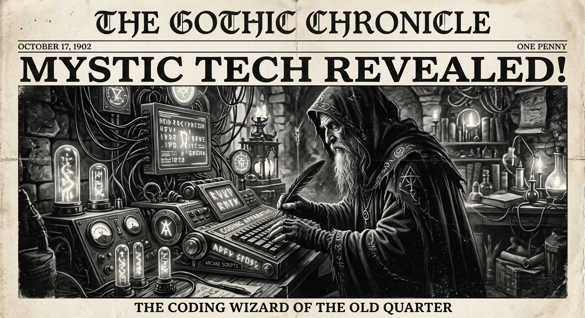

Morning Edition
6:00 AM CDTFinance & Markets
PE Firms Pivot to Space-Based Energy Assets
Major private equity firms are reallocating capital toward orbital infrastructure as the Meta-Overview Energy deal signals the commercial viability of space-based solar power beaming. Markets remain cautious but optimistic about the long-term energy transition.
— Sources: Reuters Financial, Bloomberg, April 27, 2026Truecaller Growth Signals Maturation in Emerging Markets
Truecaller is shifting its strategy toward premium subscriptions and enterprise services as its user growth stabilizes in core markets like India. Analysts watch for similar trends across the global communications sector.
— Source: TechCrunch Analysis, April 27, 2026Global Markets Steady Ahead of Fed Review
US stock futures showed minor gains early Monday as investors anticipate the Federal Reserve's latest economic outlook. Tech remains the primary driver of market momentum.
— Source: Yahoo Finance, April 27, 2026World & US
US-Japan Space Pact Solidifies Lunar Ambitions
A new bilateral agreement between the US and Japan outlines shared goals for lunar resource management and the construction of permanent habitats, marking a new era of international space cooperation.
— Source: AP News, April 27, 2026EU Proposes Digital Identity Framework
The European Commission has unveiled a unified digital identity framework designed to streamline cross-border services while strengthening data privacy protections for citizens.
— Source: EU Commission, April 26, 2026
The Monday Oracle: A Gothic Coding Wizard explores the digital void beneath ancient gothic arches.
"The best way to predict the future is to implement it. Every line of code is a brick in the foundation of the world to come."— The Developer’s Almanac
Sagittarius Horoscope
Justin, the alignment of Mercury with your sector of exploration suggests a breakthrough in that complex architectural problem you've been pondering. Being a Rat in the Year of the Horse brings a swift pace—don't let the speed blur your vision. Your keen eyes will spot the bug that everyone else missed. Lucky numbers: 14, 28, 42. Lucky color: Cyber Green. ✨
— Adapted for Justin, April 27, 2026Tech, AI, Space & Crypto
-
Meta Inks Deal for Space-Based Solar Power
Meta has signed a contract with Overview Energy to beam solar power from space to its data centers, a milestone for clean energy and orbital infrastructure.
— Source: TechCrunch, April 27, 2026 -
Amazon Monetizes Podcast Strategy
Amazon is rolling out new monetization tools for podcasters, integrating ads and subscriptions more deeply into its ecosystem to capture market share.
— Source: TechCrunch, April 27, 2026 -
Quantum-Safe Encryption Gains Traction
Large enterprises are accelerating their transition to post-quantum cryptographic standards as the threat of future decryption looms.
— Source: Cybersecurity News, April 27, 2026 -
SpaceX Prepares for Mars Logistics Test
The next Starship flight will focus on long-duration fuel storage, a critical hurdle for upcoming Mars cargo missions.
— Source: NASA Spaceflight, April 26, 2026
Active Reminders
- Test reminder from Nemu (Jan 29)
- Connect Nemu to Notion (Feb 1)
- Research VPN/proxy services (Feb 1)
- Create security OpenClaw bot (Feb 2)
- Plaid Integration Research (Feb 4)
- Build Oomi iOS and Android app (Feb 15)